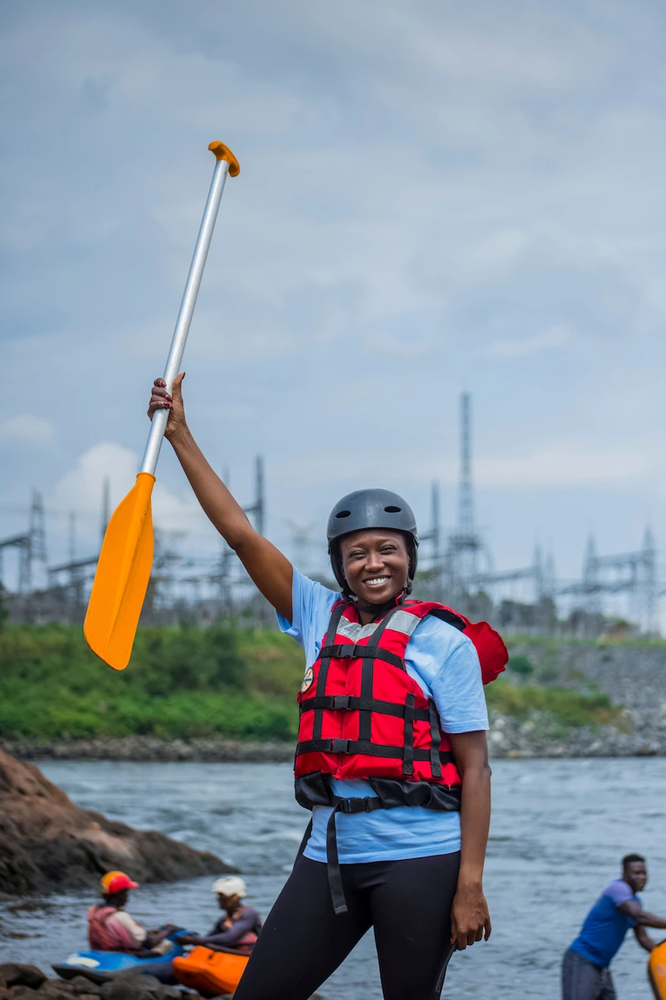

The goal of the project is to meet the course outcomes and objectives through
development
specifications that match learning activities and assignments.
You will be
involved in the planning,
design, development, and deployment of
your own whitewater rafting site.
Some of the pages have more
prescriptive
requirements than others, and there will be opportunities for
you to demonstrate
competency and your own creativity.